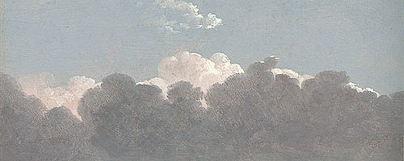

|

Cuando tenía poco más de dieciséis años
una noche me tumbé sobre el oscuro asfalto
para pensar y contemplar
el salvaje cielo estrellado.
El suelo estaba acogedoramente cálido,
perfecto para guardarme las espaldas
y no mirar al pasado.
Solamente podía mirar hacía lo que tenía delante:
aquel oscuro cielo enjoyado.
Una arboleda susurrante rodeaba la escena
junto a un suave viento que no cesaba
de recorrer aquellas solitarias canchas
en algún punto del sur de Francia.
Estaba lejos del hogar, en tierra extraña,
pero el cielo era el mismo…
el mismo que contemplaba en mi casa.
Y me observabas desde tus mil brillantes altares:
aquellas lejanas estrellas que veía
entre las nubes que el cielo recorrían
navegando en un suave oleaje.
De pronto apareciste, y me susurraste
con tus oscuros y suaves labios
al oído, para que yo escuchase…
para que comprendiera y mirase
al mundo con otros ojos:
ojos de eterno caminante.
Me devolvías la mirada
desde tu inalcanzable hogar,
eterno e ingobernable.
El que durante la noche,
cuando no hay Sol que con luz lo resguarde
de la mirada de los patanes,
calma a los soñadores de todos sus pesares.
Tu mirada era de luz brillante
pero también de una voraz oscuridad.
Y tú lengua, dulce y a la vez picante,
hacía bailar de placer a los árboles.
De lo que hablamos en aquella noche
no quedan más que ensoñaciones
y desgarrones en mi recuerdo,
pero eso es porque tu idioma es
el de las caricias entre el ser del fuego
y el no-ser del hielo,
Tus palabras no pueden recogerse por escrito,
no hay mano que las copie
ni ojos que las leas y comprendan
pues es tu sibilino Caos deslizándose
por el enladrillado de la compresión,
fugándose de la alambrada realidad.
Pero tu lengua lamió bien mis huesos
y tus palabras anidaron por siempre
en lo más profundo de mis sueños.
Así siempre las reconoceré
en cada desbordante orgasmo
y en cada lágrima
que de mis ojos escape volando
de regreso a ti, Progenitora de Tormentas.
|
 RSS
RSS